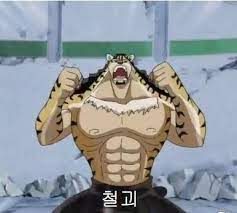

손가락 기술 최강인 지건을 버틸 수 있는 기술이있다???
- 메인페이지
- 지건의 뜻
- 지건 쓰는법
- 지건을 막는 기술
지건을 막는 기술을 알아보자!
그것은 바로바로 '텟카이' 즉 철괴라고 하는 기술이다.
지금부터 '철괴'라고 부르는 기술을 알아보도록 하도록 해보도록 그러도록 하여보자...
Iron Ingot 광물 덩어리 철로 만든 철 덩어리 를 뜻하는 단어. 기본적인 외형은 철색 금괴 여러 매체에서의 등장 만화 원피스 의 가공의 무술 만화 원피스 에 등장하는 무술 인 육식의 일종 이다. 보통 멈춰서서 팔을 가로질러 가만히 막는 방법이 일방적이나 CP9 의 일원인 재브라 는 자세를 취하지 않고 움직이며 사용한다.

어쩌라고ㅋㅋ